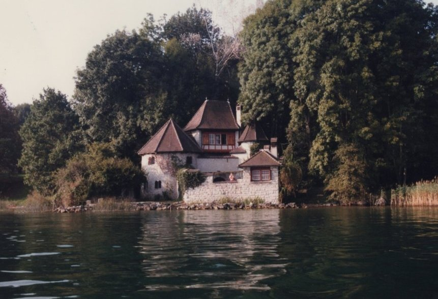

“There are people who cannot risk loneliness with the experience. They always have to be in a flock and have human contact.”- Marie Von Franz
Marie-Louise Von Franz built a tower of solitude at the behest of her mentor, Carl Jung. Jung really had more of a small castle, than a tower. They both believed a place of absolute solitude was necessary for individuation, the process of forming a unique and realised identity.

While we cannot all build towers by the shores of Lake Zurich in Switzerland, we can build our own towers wherever we are. One example of this is what I saw in the documentary below, on Yazan Sarayrah, and his new album IRTH-TRONIC . He said he hasn’t listened to any music since 2024, because he didn’t want the specific sound he heard in his mind to be influenced by any externalities.
Often creativity or genius comes from what may be brushed off as crazy.
That does necessarily mean you will enjoy Yazan’s music. Art is subjective and appreciating the process does not necessarily mean the end product is for you. What I think everyone should be able to appreciate is the courage to not conform in our society.
I couldn’t sleep the other day, and I finally brushed off Animal Farm from my bookshelf (that had been sat there for 5 years), and I read it. The sheep in the story, without fail, bleat out the same slogans after anything is said, and 100% of the time their mindless noise gets in the way of something meaningful being said. It gets in the way of change.
Non-conformity is difficult in our society.
So, when someone has willingly put themselves in solitude and refused to listen to anything else but his own inspiration, it is to be applauded.
“When Nabatean Poetry or our heritage is always placed in the same template, people get used to it and start dismissing it as just national music. They don’t pay attention to what the music is trying to tell them anymore.”
Non-conformity and solitude lead to new perspectives on old topics, and Yazan through his new album attempts to provide listeners with a new angle on traditional music. Please enjoy this short documentary on the album.
Credits- Record Label: @keiferecords
- Production: @alsawmaa
- Director & Editor: Majd Alazab
- Cinematographer: @ymanazaizeh
- Post-Production: @bakyt.jo

Click the picture to return home.